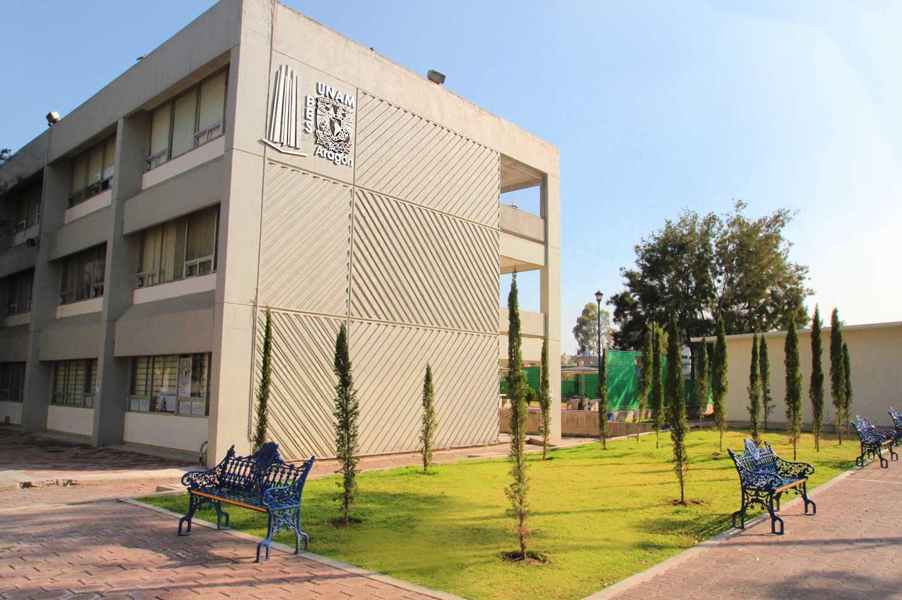
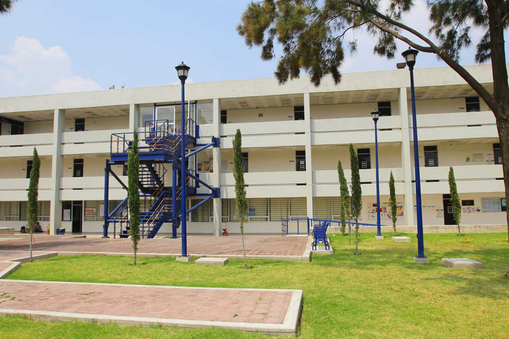

La Facultad de Estudios Superiores Aragón es un campus de la Universidad Nacional Autónoma de México.
Es la institución más reconocida de la zona nororiente de la zona metropolitana.
Tenemos oferta de programas de licenciatura, maestría y doctorado.
| PROGRAMA | ÁREA | NIVEL |
|---|---|---|
| Ingeniería Civil | Ciencias Físico-Matemáticas y de las Ingenierías | Licenciatura |
| Ingeniería en Computación | Ciencias Físico-Matemáticas y de las Ingenierías | Licenciatura |
| Ingeniería Eléctrica Electrónica | Ciencias Físico-Matemáticas y de las Ingenierías | Licenciatura |
| Ingeniería Industrial | Ciencias Físico-Matemáticas y de las Ingenierías | Licenciatura |
| Ingeniería Mecánica | Ciencias Físico-Matemáticas y de las Ingenierías | Licenciatura |
| Comunicación y Periodismo | Ciencias Sociales | Licenciatura |
| Derecho | Ciencias Sociales | Licenciatura |
| Economía | Ciencias Sociales | Licenciatura |
| Planificación para el Desarrollo Agropecuario | Ciencias Sociales | Licenciatura |
| Relaciones Internacionales | Ciencias Sociales | Licenciatura |
| Sociología | Ciencias Sociales | Licenciatura |
| Derecho SUAyED | Ciencias Sociales | Licenciatura |
| Economía SUAyED | Ciencias Sociales | Licenciatura |
| Relaciones Internacionales SUAyED | Ciencias Sociales | Licenciatura |
| Arquitectura | Humanidades y Artes | Licenciatura |
| Diseño Industrial | Humanidades y Artes | Licenciatura |
| Pedagogía | Humanidades y Artes | Licenciatura |
| Derecho | Ciencias Sociales | Especialización |
| Puentes | Ciencias Físico-Matemáticas y de las Ingenierías | Especialización |
| Arquitectura | Humanidades y Artes | Maestría |
| Derecho | Ciencias Sociales | Maestría |
| Economía | Ciencias Sociales | Maestría |
| Ingeniería | Ciencias Físico-Matemáticas y de las Ingenierías | Maestría |
| Pedagogía | Humanidades y Artes | Maestría |
| Política Criminal | Ciencias Sociales | Maestría |
| Arquitectura | Humanidades y Artes | Doctorado |
| Derecho | Ciencias Sociales | Doctorado |
| Economía | Ciencias Sociales | Doctorado |
| Pedagogía | Humanidades y Artes | Doctorado |
También tenemos complementos a tu formación académica como:
Nos encontramos en